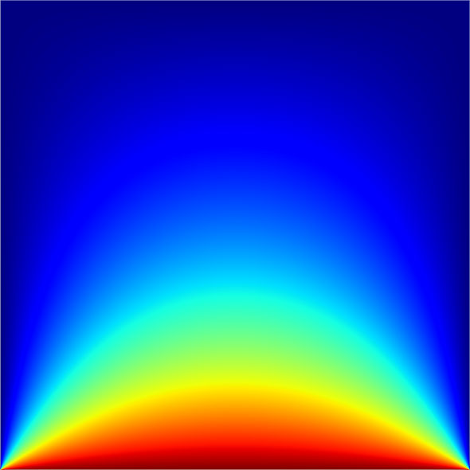

2D Multigrid & Red-Black SOR in Ada95… Part 3

Now for the epic conclusion to my 3 part series on Successive Over Relaxation and Multigrid PDE solving methods. If that last sentence didn’t make sense to you, please refresh your memory by skimming parts one & two.
The Multigrid Algorithm
In our main function, we start by kicking off n tasks (Ada’s version of threads) that each operate on a subset of rows from the grid. These tasks run concurrently to perform what is known as a Full Multigrid Cycle.
The multigrid cycle consists of iterating over the grids in the patten shown in the above image, stopping at each level to perform R-B SOR passes. When the algorithm is at level 1, the coarsest grid, the grid is solved with R-B SOR. For every other level, a specified number of R-B SOR passes are performed. The only exception is on the last step in the cycle where the grid is checked for convergence after the specified number of R-B SOR passes. If the grid isn’t solved, the cycle is repeated. Between levels, restriction/prolongation operations are performed. So, let’s look at R-B SOR, restriction, and prolongation are parallelized in Ada.
Restriction
Restriction, moving from a fine grid to a coarser grid, works by setting each coarse grid point to an average of points on the fine grid. In this algorithm, we set each coarse grid point using the following stencil:
| 1/16 | 1/8 | 1/16 |
| 1/8 | 1/4 | 1/8 |
| 1/16 | 1/8 | 1/16 |
Restriction is the most straight-forward operation to parallelize. Each grid point in the coarser grid can be updated independently, so each Ada task loops through its rows and updates based on the fine grid. The only requirement is a barrier at the end of the procedure to prevent race conditions.
2
3
4
5
6
7
8
9
10
11
12
13
14
15
16
17
18
19
20
21
22
23
24
25
26
-- Straight injects the boundaries and full weights the coarse grid points
procedure restrict(g_fine_idx : in Natural; g_coarse_idx : in Natural) is
g_fine : ref_grid := grids(g_fine_idx);
g_coarse : ref_grid := grids(g_coarse_idx);
begin
-- SKIP TO BARRIER IF NO ROWS
if first_row /= -1 then
for i in first_row..last_row loop
for j in g_coarse'Range loop
if (i = 0) or (i = g_coarse'Last) or (j = 0) or (j = g_coarse'Last) then
-- Straight inject if we are on a boundary
g_coarse(i,j) := g_fine(i*2, j*2);
else
-- Otherwise Adjunct operator
g_coarse(i,j) := (0.0625 * (g_fine(-1+i*2, -1+j*2) + g_fine(-1+i*2,1+j*2) + g_fine(1+i*2,-1+j*2) + g_fine(1+i*2,1+j*2))) +
(0.125 * (g_fine(-1+i*2,j*2) + g_fine(1+i*2,j*2) + g_fine(i*2,-1+j*2) + g_fine(i*2,1+j*2))) +
(0.25 * g_fine(i*2,j*2));
end if;
end loop;
end loop;
end if;
tasks_barrier.Here;
-- RESTRICTION FINISHED
end restrict;
Prolongation
Prolongation, moving from a coarse grid to a finer grid, works by setting each fine grid point to its corresponding coarse grid point or an average of its surrounding fine grid points. In this algorithm, we set each fine grid point using the following stencil:
| 1/4 | 1/2 | 1/4 |
| 1/2 | 1 | 1/2 |
| 1/4 | 1/2 | 1/4 |
Prolongation is a little trickier to parallelize than restriction. First, notice that each grid point in the coarse grid can be straight injected (a 1:1 copy) into its corresponding point in the fine grid. Second, notice that every other point in the grid is computed based on averages of these 1:1 copy points. So to parallelize, we first copy the 1:1 points, wait at a barrier, and finally compute the remaining points.
2
3
4
5
6
7
8
9
10
11
12
13
14
15
16
17
18
19
20
21
22
23
24
25
26
27
28
29
30
31
32
33
34
35
36
37
38
39
40
41
42
-- Ignores the boundaries (these always stay the same) and bilinearly interpolates
-- the fine grid points
procedure prolongate(g_coarse_idx : in Natural; g_fine_idx : in Natural) is
g_fine : ref_grid := grids(g_fine_idx);
g_coarse : ref_grid := grids(g_coarse_idx);
begin
-- SKIP TO BARRIER IF NO ROWS
if first_row /= -1 then
for i in first_row..last_row loop
for j in g_fine'First+1..g_fine'Last-1 loop
if ((i mod 2) = 0) and ((j mod 2) = 0) then
g_fine(i,j) := g_coarse(i/2,j/2);
end if;
end loop;
end loop;
end if;
tasks_barrier.Here;
-- SKIP TO BARRIER IF NO ROWS
if first_row /= -1 then
for i in first_row..last_row loop
for j in (g_fine'First+1)..(g_fine'Last-1) loop
if (i mod 2) = 1 then
if (j mod 2) = 0 then
g_fine(i,j) := 0.5 * (g_fine(i-1,j) + g_fine(i+1,j));
else
g_fine(i,j) := 0.25 * (g_fine(i+1,j+1) + g_fine(i+1,j-1) + g_fine(i-1,j+1) + g_fine(i-1,j-1));
end if;
else
if (j mod 2) = 1 then
g_fine(i,j) := 0.5 * (g_fine(i,j-1) + g_fine(i,j+1));
end if;
end if;
end loop;
end loop;
end if;
tasks_barrier.Here;
-- PROLONGATION FINISHED
end prolongate;
R-B SOR
By using a red-black algorithm, we can parallelize a Successive Over Relaxation method that updates the grids in-place (saving us memory). First imagine the grid as a checkerboard, with alternating red and black points. Because the new red point values are computed from only black points (and vice versa), the grid points can be updated concurrently by alternately updating red/black points.
2
3
4
5
6
7
8
9
10
11
12
13
14
15
16
17
18
19
20
21
22
23
24
25
26
27
28
29
30
31
32
33
34
35
36
37
38
39
40
41
42
43
44
45
46
47
48
49
50
51
52
53
54
55
56
57
58
59
60
61
62
63
64
65
66
67
68
69
70
71
72
73
74
75
76
77
-- on grids(cur_grid_idx)
-- If the do_max_diff flag is set, the function sets the shared
-- converged variable to True or False based on the epsilon value
procedure RB_SOR(do_max_diff : Boolean) is
g : ref_grid := grids(cur_grid_idx);
j_start : Natural;
j : Natural;
tmp : Long_Float;
begin
tasks_barrier.Here; -- Barrier needed to make sure all tasks are outside any loops
-- that rely on converged's value
converged := True;
-- SKIP TO BARRIER IF NO ROWS
if first_row /= -1 then
for i in first_row..last_row loop
if (i mod 2) = 1 then
j_start := 1;
else
j_start := 2;
end if;
j := j_start;
Red_Loop :
loop
if j == g'Last then
exit Red_Loop;
end if;
tmp := omega * (g(i-1,j) + g(i,j-1) + g(i+1,j) + g(i,j+1)) * 0.25 + (1.0-omega) * g(i,j);
if do_max_diff then
max_difference(me) := Long_Float'Max(max_difference(me), abs(g(i,j)-tmp));
end if;
g(i,j) := tmp;
j := j + 2;
end loop Red_Loop;
end loop;
end if;
tasks_barrier.Here;
-- SKIP TO BARRIER IF NO ROWS
if first_row /= -1 then
for i in first_row..last_row loop
if (i mod 2) = 1 then
j_start := 2;
else
j_start := 1;
end if;
j := j_start;
Black_Loop :
loop
if j == g'Last then
exit Black_Loop;
end if;
tmp := omega * (g(i-1,j) + g(i,j-1) + g(i+1,j) + g(i,j+1)) * 0.25 + (1.0-omega) * g(i,j);
if do_max_diff then
max_difference(me) := Long_Float'Max(max_difference(me), abs(g(i,j)-tmp));
end if;
g(i,j) := tmp;
j := j + 2;
end loop Black_Loop;
end loop;
-- CONVERGENCE CHECK
if do_max_diff and (max_difference(me) < epsilon) then
converged := false;
end if;
max_difference(me) := 0.0; -- Reset max_difference array
end if;
-- BARRIER
tasks_barrier.Here;
end RB_SOR;
Set Bound Rows
To prevent collisions between the tasks, it’s mandatory that none of the task’s rows overlap. I wanted to solve this problem in the simplest way possible. To do this, I used a greedy method based on the task id and the number of rows and tasks. It doesn’t split the rows up perfectly, but its close enough. In the case where we have more tasks than grid rows, the start/end rows are set to -1 which means these tasks perform no work when prolongating, restricting, and solving the current grid.
2
3
4
5
6
7
8
9
10
11
12
13
14
15
16
17
18
-- the grid size.
-- first_row, last_row = -1 if the task has no work to do (happens
-- on coarse grids)
procedure set_bound_rows is
len : Natural;
begin
len := Integer(Float'Ceiling(float(grids(cur_grid_idx)'Last-1)/float(tasks)));
first_row := ((me-1)*len)+1;
last_row := first_row + len - 1;
if first_row <= grids(cur_grid_idx)'Last then
first_row := -1;
last_row := -1;
elsif last_row <= grids(cur_grid_idx)'Last then
last_row := grids(cur_grid_idx)'Last - 1;
end if;
end set_bound_rows;
The End
I hope this blog series was interesting, enlightening, or at least fun to look at. The code in it’s entirety can be found on my github. To end with some eye candy, the following is a visualization of a solved grid using SciPy. If you had a freezer with a floor that radiated heat, this is what the heat flow/dissipation would look like at equilibrium.
